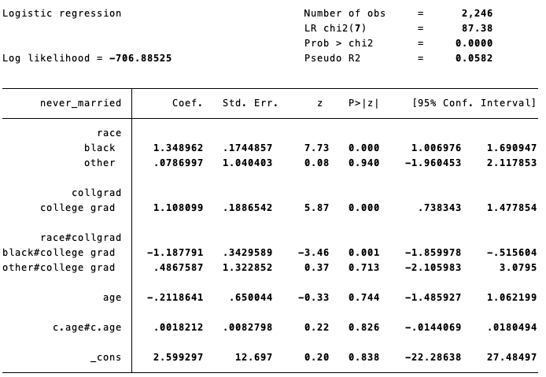

Stata
Stataで知っておいたら便利かもしれないコードを不定期に更新します。
mimrgns: 多重代入されたデータで限界効果を計算する
多重代入されたデータを用いてロジスティック回帰分析などを行ったとする。Stataのmarginsコマンドは多重代入されたデータには対応していないため、そのままでは限界効果（Average marginal effectなど）を計算できない。そこで、mimrgnsというパッケージを利用すると限界効果を計算できる。
参考：Missing Data Part II: Multiple Imputation & Maximum Likelihood
ssc install mimrgns // インストール
...
...
mi estimate: logit y x1 x2 x3
mimrgns, dydx(*) predict(pr) // 限界効果を計算する(2025-09-24)
mchange: 任意の範囲だけXを動かした場合の限界効果を計算する
独立変数が連続変数の場合、1単位の変化に対する従属変数の確率の変化のみならず、もう少しいろいろな変化量（e.g. 1SDの変化に対する確率の変化、任意の値から任意の値まで変化したときの確率の変化など）を知りたいと思ったとする。このような場合には、SPost13パッケージに含まれているmchange関数を使うとよい。
(2025-09-24)
ssc install spost13 // インストール
...
...
logit y x1 x2 x3
mchange x1 x2参考：
- Long, J. Scott, and Jeremy Freese. 2014. Regression Models for Categorical Dependent Variables Using Stata, Third Edition. Stata Press.
- Using the spost13 commands for adjusted predictions and marginal effects with binary dependent variables ## clonevar: 変数ラベルと値ラベルの情報を落とさずに変数をコピーする
generateで変数を作成すると、もとの変数についていた変数ラベルや値ラベルの情報がなくなってしまう。もしそうした情報を残しておきたいのであれば、clonevarを使うとよい。
sysuse auto, clear
generate copy1 = foreign
tab copy1
clonevar copy2 = foreign
tab copy2（2024/11/22）
fre: 変数の数値とラベルを一緒に表示する
度数分布を表示するときによく使うコードがtabulateだが、値ラベルがついている場合にはそれぞれの値が何なのかわからず、変数を加工したりするときに不便である。このような場合には、freという関数を使うと、値と値ラベルがどちらも表示されて便利である。
ssc install fre // インストールする
sysuse auto, clear
tab foreign // 値ラベルしか出ない
tab foreign, nolabel // 値しか出ない
fre foreign // どちらも出る （2024/11/22）
（2024/11/22）
pweight, aweight, fweight, iweightの違い
Stataには4種類のweightのコマンドがあり、いつどれを使うのかマニュアルをみてもいまいちわかりにくい。インターネット上で見つけた授業資料が簡潔によくまとまっているのでメモとしてまとめておく。
pweight: 回帰分析でサンプリングウェイトをつけるときには基本的に常にpweightを使う。
aweight: 記述統計量やクロス集計表などでサンプリングウェイトをつけるときに使う。標準誤差を計算しないような記述的集計を行うときに使うと考えておくとよい。
fweight: 各observationが表す度数が異なる場合に用いる（たとえば集計表など）。社会調査の個票データを分析するような場合は使うことはない。
iweight: 使ってはいけない。
（2024/03/27）
margins, contrast: 限界効果どうしの差の検定
大卒であると結婚確率が高いことはよく知られている。いま、大卒であることが結婚確率に与える効果が人種（Race）によって異なるのか知りたいとする。このとき、次のようなロジットモデルを推定する。
sysuse nlsw88.dta, clear //Stataのサンプルデータを利用する
logit never_married i.race i.collgrad i.race#i.collgrad c.age##c.age
黒人（black）と大卒（collgrad）の交互作用項は負であり、白人（white）と比べて黒人の場合は大卒であることが結婚に与える効果は弱いというような結果である。しかし、ロジットモデルにおける係数はあくまで対数オッズであり、具体的に両者の確率がどの程度異なるのかはここからはわからない。そこで、人種ごとの大卒の限界効果を計算する：
margins , dydx(collgrad) at(race = (1(1)3))それぞれ、white, black, otherにおいて大卒であることが非大卒と比べてどの程度結婚確率を上昇させるかを表している。whiteの場合は大卒であれば非大卒と比べて結婚確率が0.092高い。一方、blackの場合は大卒であれば非大卒と比べて結婚確率が0.011低いという結果となっている。
では、whiteにおける大卒の限界効果と、blackにおける大卒の限界効果との間には、たしかに差があるといえるのだろうか。これを確かめるときには、margins, contrastを使うことができる。
margins r.race, dydx(collgrad)前半にはそれぞれblackとwhite、otherとwhiteを対比させたときの検定の結果、後半には差と標準誤差、信頼区間が表示されている。結果は、blackとwhiteとの大卒の限界効果の差は統計的に有意であるということを示している。
前者のmarginsの結果は、Mize, T. D. (2019). Best practices for estimating, interpreting, and presenting nonlinear interaction effects. Sociological Science, 6, 81–117.のTable 3（p.104）の「First Differences」、後者のmargins, contrastの結果は「Second Differences」に、それぞれ対応する。「Second Differences」のほうをStataで計算するときの方法がよくわかっていなかったのだけど、どうやら上記で計算できそうだ。
（2022/02/08→2022/09/19移行）
import spss: savファイルを読み込む（Stata 16以降）
Stata 16からsavファイルをラベルを落とさずにStataで読み込むことができるようになっていた。詳しくはこちらのページを参照。
（作成日不明→2022/10/09移行）
rename *, lower：すべての変数名を小文字にする
すべての変数名に含まれる大文字を小文字に変換したいときには、以下のコマンドを使うとできる。
rename *, lower逆に、すべての小文字を大文字に変換したいときには、以下のコマンド。
rename *, upperあんまりこういう場面はないと思うが、すべての小文字を大文字に、すべての大文字を小文字に、同時に変換したい（たとえば、ExAmPlEという変数をeXaMpLeというふうに変えたい）ときには、varcaseというアドインを使う。
ssc install varcase /* install commands. */
varcase _all今まではすべて小文字に直すときにcsvにデータをexportして保存してからそのcsvファイルを読み込んでdtaファイルに再度exportする（そのせいでもともとついていたラベルがすべて消えてしまう）という相当無駄な作業をしていたが、それをしなくてよくなった。やっぱり少しでも楽をしようという気持ちが大事だ。。
（2020/4/3→2022/10/09移行）
destringのtips：カンマの入った文字列を数値列に変換
文字列（string）の変数を数値列に直す、destringというコマンドがある。destring, replaceたいていの場合はうまくいくが、たとえば以下のように、3桁区切りのカンマが入っている場合にはこのコマンドを走らせてもうまく数値列に変換できない。
この場合は、ignoreというオプションを使うと数値列に変換できる。
destring, replace ignore(","),ignore("char")というオプションは、ダブルクォーテーションの間の文字列を無視するという命令のよう。なので、これ以外にもカンマ以外にも謎の文字列が入っている場合にはこれを除いて数値列に変換することができるようだ。
（作成日不明→2022/10/09移行）
substr：文字列から特定の数文字を抽出
| 年 | year |
|---|---|
| 1996年 | 1996 |
| 1997年 | 1997 |
| 1998年 | 1998 |
| 1999年 | 1999 |
| 2000年 | 2000 |
左のように"年"という文字を含んだ変数から前4つの数字だけを取り出して、右のように数字だけからなる変数yearを作るときには、substrというコマンドを使う。
gen year = substr(年, 1, 4)
*** 以下でも同じ結果を得られる.
gen year = substr(年, -2, 4)substr()のなかの1つめの項は変数名を、2つめの項は前から何番目の文字から抽出するかを、3つめの項は先に指定した文字からいくつの個数の文字を抽出するかを、それぞれ指定する。たとえば前者のコマンドの場合は、「年という変数の1番目の文字から4文字分抽出する」ということになる。後者のコマンドのように2つめの項に-を指定することもでき、この場合は後ろから何番目の文字を抽出するかを表す。先の例だと、「年という変数の後ろから2番目の文字から4文字分抽出する」という意味になる。参考：http://statamemo.jugem.jp/?month=201103
（作成日不明→2022/10/09移行）
generate double：8桁を超える値をとる変数を作成する
Stataでは数字はデフォルトだとfloatという型で保存される。詳しいことはわからないけれど、floatというのは10進数のもとでは有効桁数が7桁となる4byteのサイズを持つ形式のことを指すようである（参考：http://www.cc.kyoto-su.ac.jp/~yamada/programming/float.html）。ほとんどの場合数値はfloat型で問題なく扱えるのですが、たまに8桁を超える値をもつ変数を作ろうとした場合、値が指数表記されてしまい、正確な値を保存することができないという事態が起こる。
そのような場合は、変数を作成するときに型名としてdoubleを指定すれば良いようです（参考：https://www.stata.com/manuals13/u12.pdf#u12Data 12.2.2節"Numeric storage types"）。doubleは10進数のもとでは有効桁数が15桁となる8byteのサイズを持つ形式。これを使うことで、8桁を超える値をとるような変数を扱うことができるようになる。実際の使い方としてはこんな感じ：
gen double x = yこれで、新しく作られる変数xが8桁を超える値をとるものであったとしても、値が指数表記されずにすむ。
（作成日不明→2022/10/09移行）
labsumm：記述統計量の変数名にラベルをつけて出力
summarizeだと変数にラベルがつかないので、エクセルなどに貼り付けた後に自分で書かないといけないけど、labsummコマンドだとラベルをつけた状態で出力できる。
ssc install labsumm /*コマンドのインストール*/
lab var female "女性"
lab var income "所得"
labsumm female income（作成日不明→2022/10/09移行）
2024-11-22追記：Stata 18でdtableという便利な関数が追加されたので、今後はこれを使うとよいと思う。
fsum：より一般的な記述統計量を出力するコマンド
labsummよりも新しいコマンドで、通常のsummarizeコマンドをさらに拡張したような使い方ができる。変数にラベルをつけて表示することはもちろん、カテゴリカル変数の内訳を（ダミー変数を作ることなく）算出できたりする。詳しくはhelpファイルを参照のこと。
ssc install fsum /*コマンドのインストール*/
lab var sex "性別"
lab def sexlab 1"男性" 2"女性"
lab val sex sexlab
recode sex (1=0)(2=1), gen(female)
lab var female "女性"
lab var income "所得"
fsum female income, stats(mean sd p50) /*平均、標準偏差、中央値を表示*/
fsum female income, uselabel /*変数名はラベルで表示*/
fsum sex income, catvar(sex) /*カテゴリカル変数について内訳の%を算出*/
fsum female income, format(%9.4f) /*小数点第4位まで出力（デフォルトは第2位）*/（作成日不明→2022/10/09移行）
2024-11-22追記：Stata 18でdtableという便利な関数が追加されたので、今後はこれを使うとよいと思う。
vioplot：ヴァイオリン・プロットを描く
箱ひげ図とヒストグラムの特徴を併せ持つヴァイオリン・プロットをStataでも描くことができる。"VIOPLOT"というコマンドを使用する。
ssc install vioplot /*コマンドのインストール*/
/***試しに箱ひげ図と見た目を比べてみる***/
use "http://www.stata-press.com/data/r13/auto", clear
graph box mpg, title("Box plot") over(foreign) ylabel(10(10)50) /*こっちが箱ひげ図*/
graph save "box.gph", replace
vioplot mpg, title("Violin plot") over(foreign) ylabel(10(10)50) /*こっちがヴァイオリンプロット*/
graph save "vioplot.gph", replace
graph combine "box.gph" "vioplot.gph" /*並べてみる*/実際の見た目はこんな感じ。violin plotのほうがぱっとみた時の情報量が多い。デフォルトだと、カーネル密度のなかに箱ひげ図がはいったかたちになる。
（作成日不明→2022/10/09移行）
coefplot：回帰係数と信頼区間をプロットする
種々の回帰分析から得られた係数とその信頼区間をプロットするコマンド。以下の通り開発者が詳しく解説してくれているので、ここでは最低限のコマンドだけ載せておく。
参考）Jahn, Ben. 2017. "Plotting regression coefficients and other estimates in Stata." University of Bern Social Sciences Working Paper No.1.
Jahn, Ben. "A new command for plotting regression coefficients and other estimates." 12th German Stata Users Group meeting Hamburg, June 13, 2014.
ssc install coefplot
use "http://www.stata-press.com/data/r13/auto", clear
qui reg mpg rep78 foreign /*回帰分析をしたあとに…*/
coefplot /*切片も含めすべての係数および95%信頼区間をプロット*/
coefplot, keep(rep78 foreign) /*指定した独立変数のみプロット*/
coefplot, scheme(s1mono) keep(rep78 foreign) ciopts(recast(rcap)) vert scale(1.2) ylabel(,grid) ytitle("coef.") /*自分が使うときはこんな感じで設定*/（作成日不明→2022/10/09移行）
tabulate, gen()：ダミー変数を一度に作成する
tabulateコマンドのオプションに、結果を出力したあとにダミー変数を作ってくれるものがあります。generateやrecodeコマンドを使わずにダミー変数を一度に作成することができます。記述統計量を出すときなどに便利です。
tab educ, gen(educd)
/*
もしeducが1, 2, 3, 4, 5の5値の変数であれば，educd1-educd5という5つの変数が作られる．
小さいカテゴリから順に1, 2,…と自動的に名前が付いていくので，間違えないように注意．
*/
tab educ educd1 /*ちゃんと変数ができたかどうか確認してみる*/（作成日不明→2022/10/09移行）
set more off：–more– を表示しないようにする
Stataは縦に長い結果を出力したり、時間のかかる計算をしているときに、途中で
–more–
という表示を出します。これが出ると、何らかのキーを押したりクリックしたりしないと計算が進まなかったり、続く結果が出力されなかったりして面倒です。
そこで、Stataを開いたときに
set more offというコマンドを走らせると、Stataを閉じるまでは
–more–
が出ないようになります。do fileの一番最初とかに書いておくとよいと思います。
また、
set more off, permanentlyというコマンドを走らせるとStataの設定自体が書き換わるので、再度開いたときにもその効果が続きます。
（作成日不明→2022/10/09移行）
grc1leg：グラフを結合したときに凡例を1つだけに
graph combineという、Stataで作ったグラフを結合するコマンドがあります。ただ、もとのグラフごとに凡例がついている場合、単純に結合するとくっつけた数だけ凡例ができてしまい、大変冗長になってしまいます。
そこで、どれか一つのグラフから凡例をとってくるコマンドがgrc1legです。使い方は以下のとおり。
twoway line y1 x, by(sex) saving(graph1, replace)
twoway line y2 x, by(sex) saving(graph2, replace)
grc1leg graph1.gph graph2.gph, legendfrom(graph1)このばあい、グラフ1から凡例をとってきて表示するというかたちになります。
（作成日不明→2022/10/09移行）